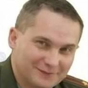
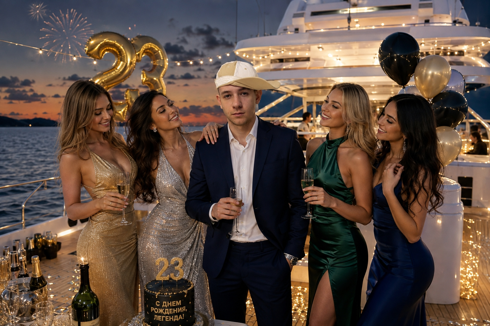
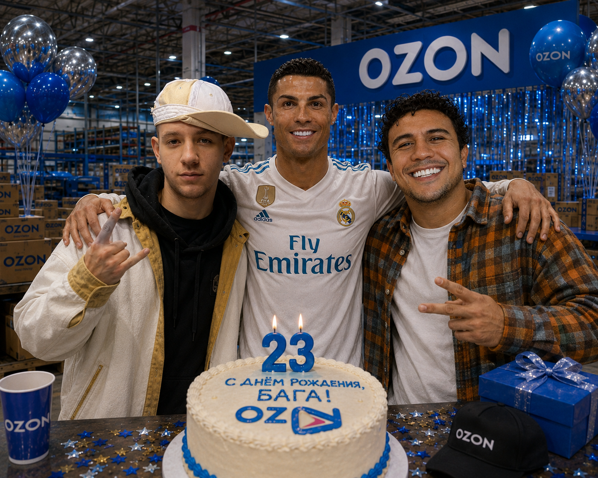

обнаружен день рождения
запустить протокол поздравления?
одна из них — твоя. две другие... ну удачи
Ты выбрал верно, король.
Облысение к 30 и смерть в нищите отменяются.
Военник почуял неладное и дал дёру.
Бежишь ты сам — знай перепрыгивай кусты и не тормози.
ПРОБЕЛ · ↑ · или тап по экрану — прыжок

Он больше не убежит.
МИНИ-ИГРА 1 ✅
С неба сыплются подарки — лови их.
А повестки и военкомы пусть летят мимо: поймаешь — минус подарок.
AD · ←→ · или веди пальцем
Ни один военком не помешал.
МИНИ-ИГРА 2 ✅
Субо повадился вылезать из дырок в столе.
Шовхал этого не потерпит — прихлопни его 10 раз.
клик или тап по Субо — шлепок
Больше не вылезет.
МИНИ-ИГРА 3 ✅
Торт есть, свечи горят. Туши их тыком.
Только они норовят загореться обратно — гасить надо все разом.
клик или тап по свече — дунуть


Богдан, с 23-летием! Ты только что догнал военник, собрал подарки,
прихлопнул Субо и задул свечи — год начинается уверенно.
Пусть так и идёт: что нужно — догоняется, что мешает — прихлопывается,
а желания сбываются с первой попытки. Здоровья, денег, спокойствия
и людей вокруг, с которыми не скучно.
Ты красавчик. С днём рождения, брат 🤝